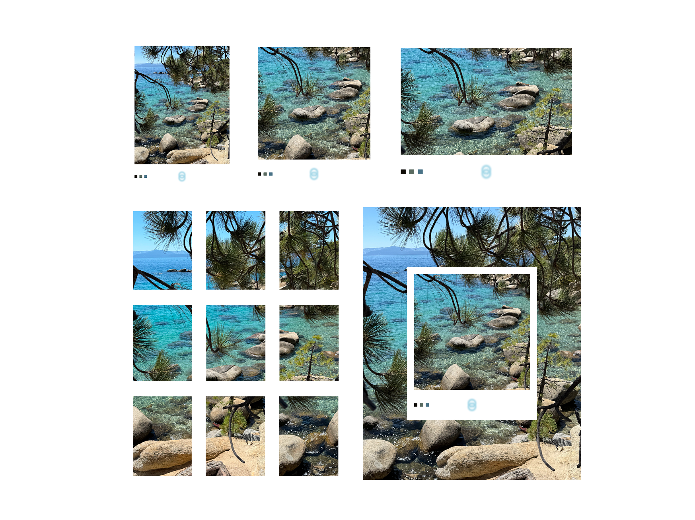
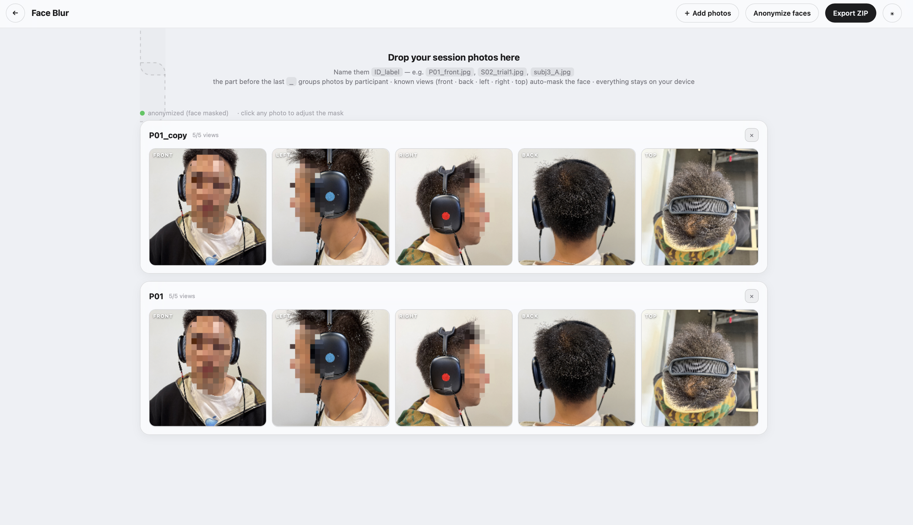

Playground
Bouncing Ball
A physics playground — gravity, trails, sound.

Photo Studio
Frame a photo, collage video + stills, or split a photo into a grid.
Momentum
Interval workouts with an exportable timer video.

Face Blur
Batch-anonymize research photos — all local.
Image Trail
Move your cursor to leave a trail of photos.
Gallery
Spin a 3D cylinder or sphere of colored-glass photo cards.